Karya Utama (Studi Kasus)
Rincian proyek unggulan dan dampaknya.
SIBIGo — Interactive Sign Language App
SIBIGo adalah aplikasi web penerjemah bahasa isyarat secara real-time berbasis AI. Sistem ini mengintegrasikan computer vision (MediaPipe) untuk ekstraksi landmark gerakan tangan dan model deep learning (LSTM) untuk mengklasifikasikan gestur menjadi teks secara akurat dan responsif.
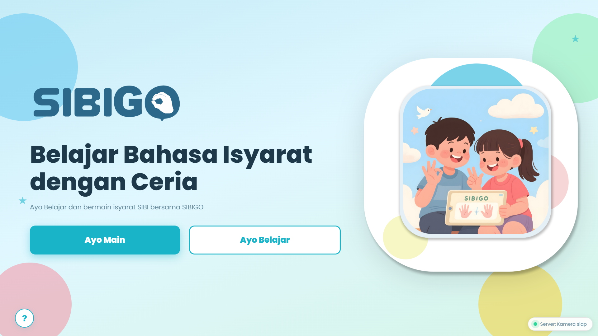
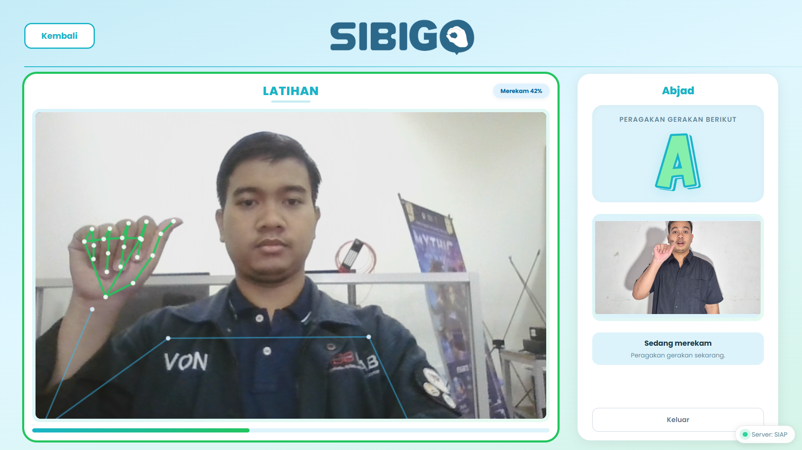
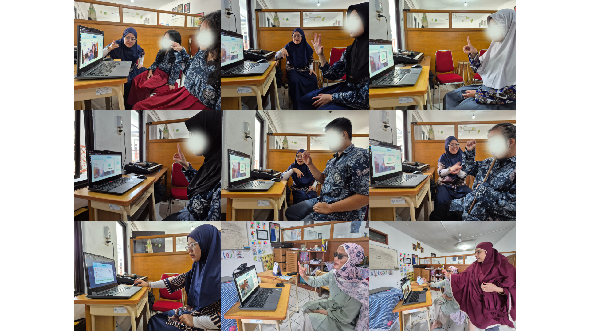
Tautan: Lihat Repository GitHub
Curse Alley
Curse Alley adalah proyek game Arcade Bowling yang inovatif. Menggunakan Arduino dan ESP32 sebagai pengganti gamepad, game ini menghadirkan kontrol fisik yang imersif.


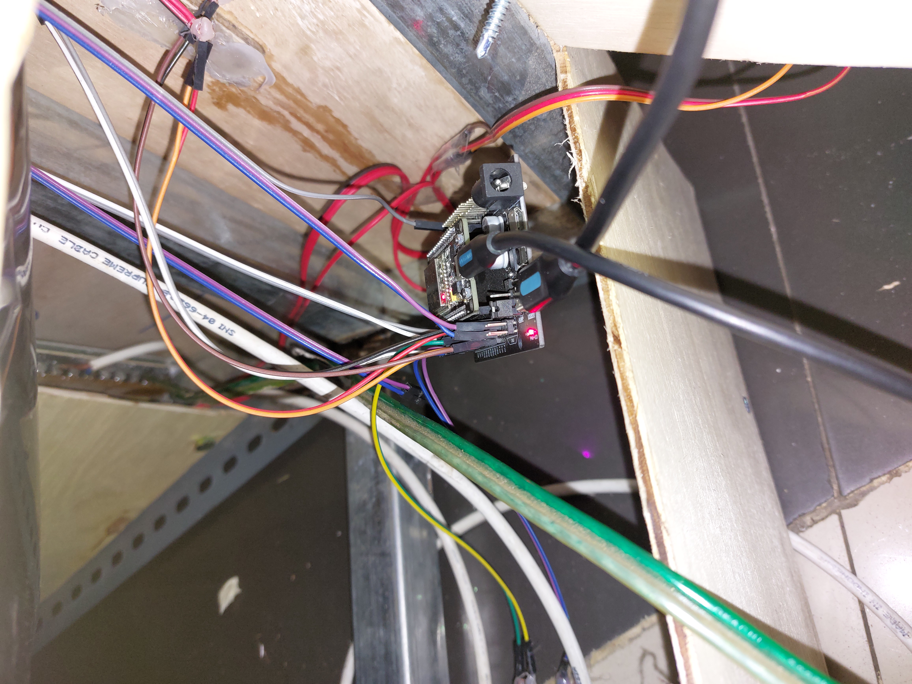
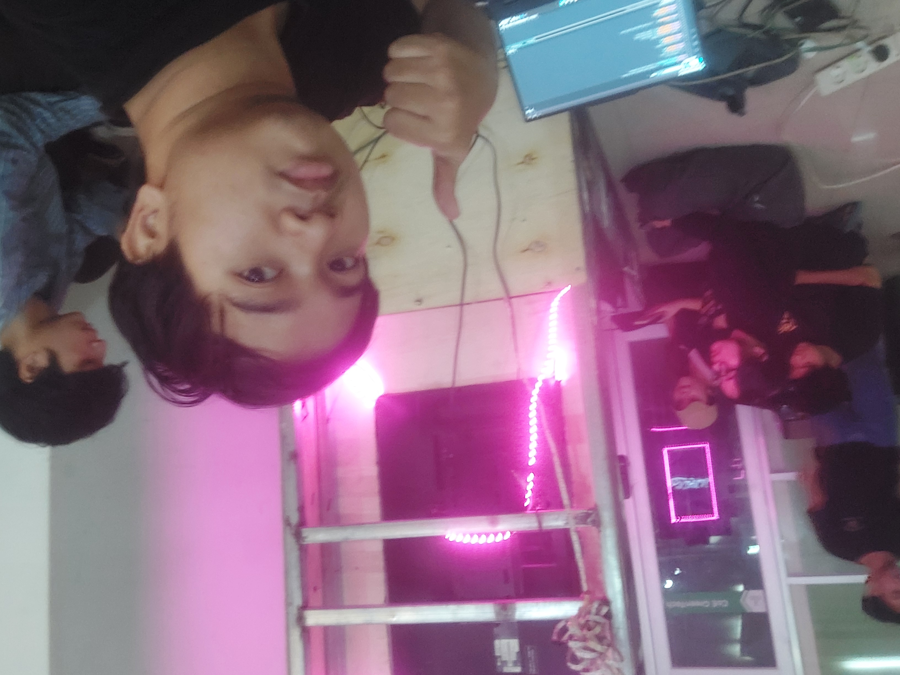
Tautan: Lihat Proyek di itch.io
PawScape
Game interaktif yang dikendalikan melalui deteksi pergerakan tangan (Hand Gesture) menggunakan OpenCV dan Unity.
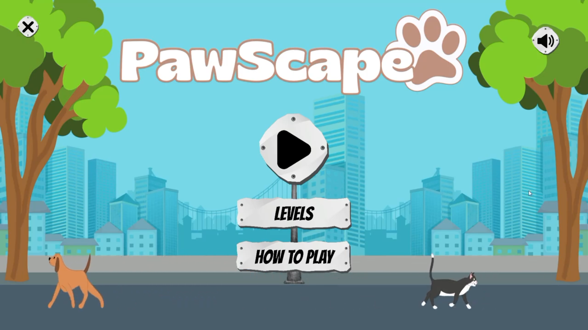
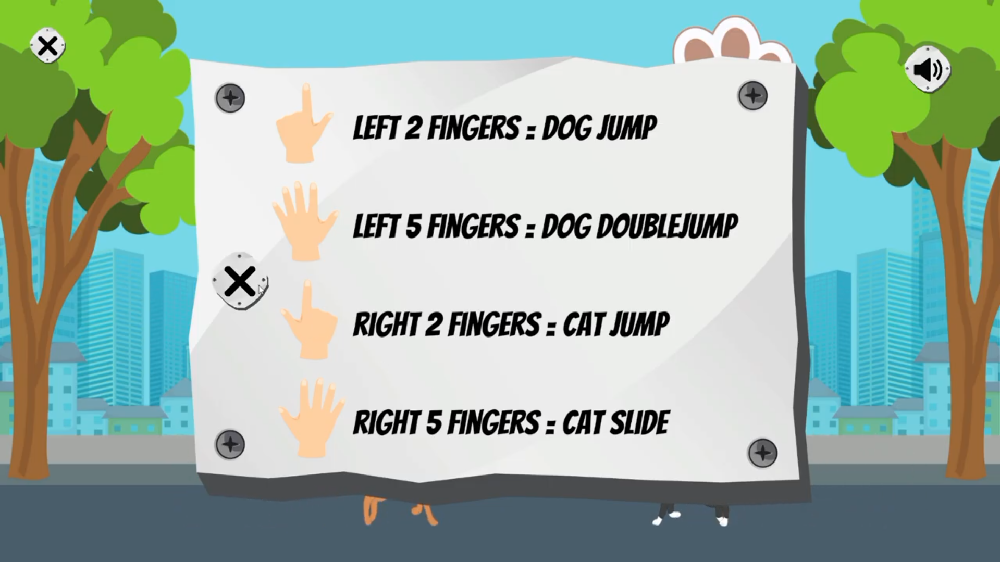
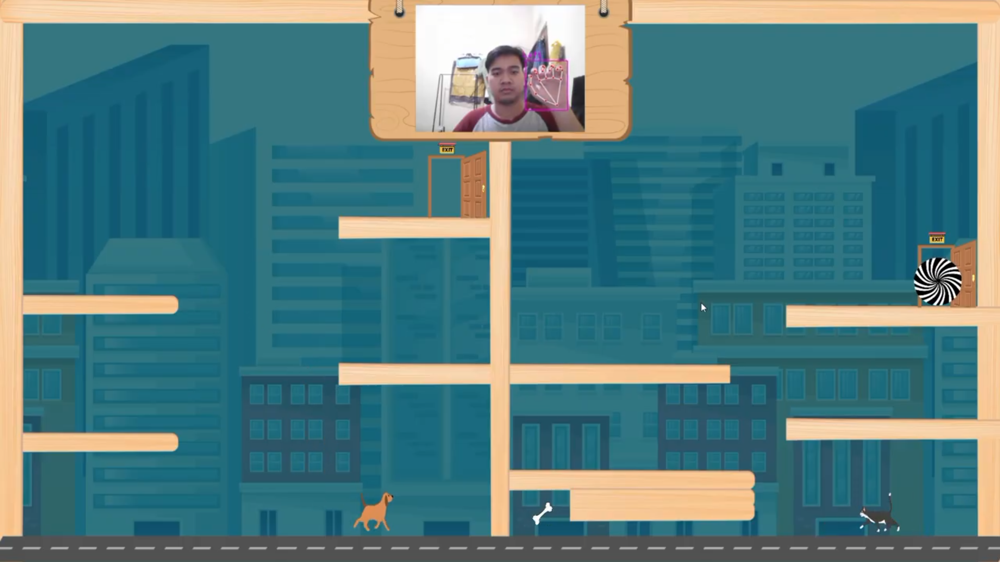
Tautan: Lihat Proyek di itch.io
Wired Solution
Game ini dibuat dengan waktu 48 Jam di laksanakan di BINUS University Jakarta pada lomba Garena Game Jam 3 yang di selenggarakan oleh Garena Indonesia. Tim saya yaitu = Apapun Selain TA. Dengan anggota Ivan Saputra, Shedy Indra Maulana, Muhammad Raihan Ripaie.
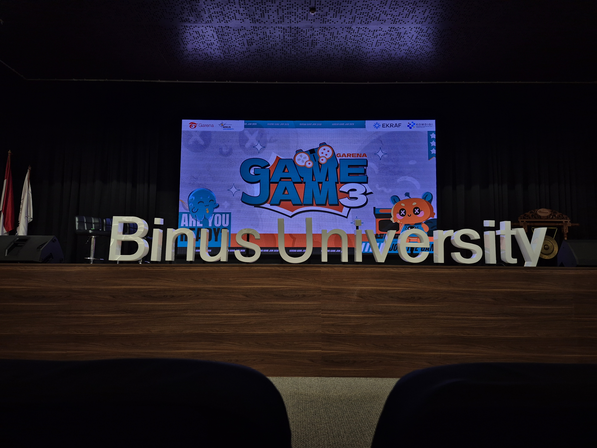
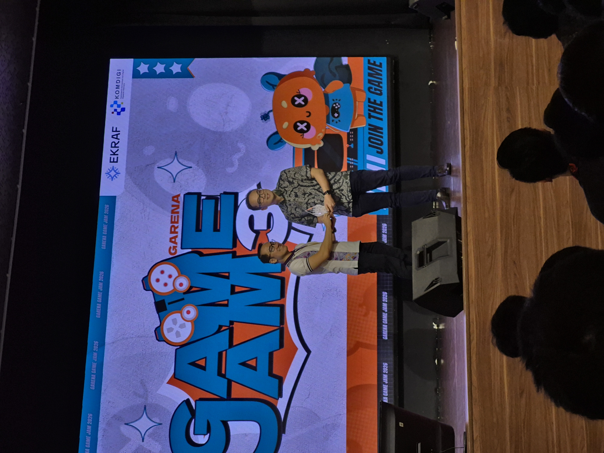

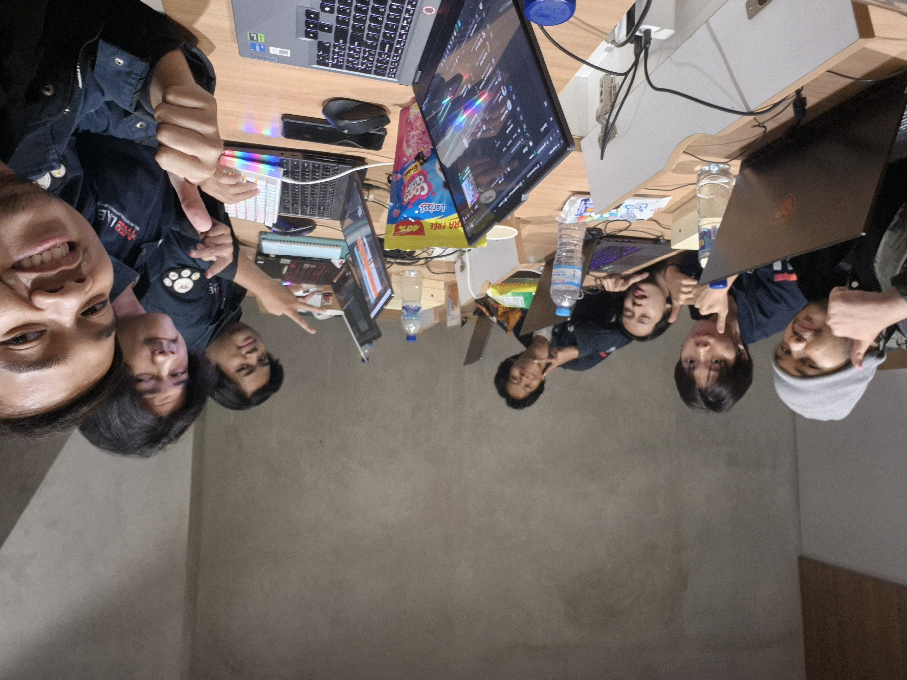
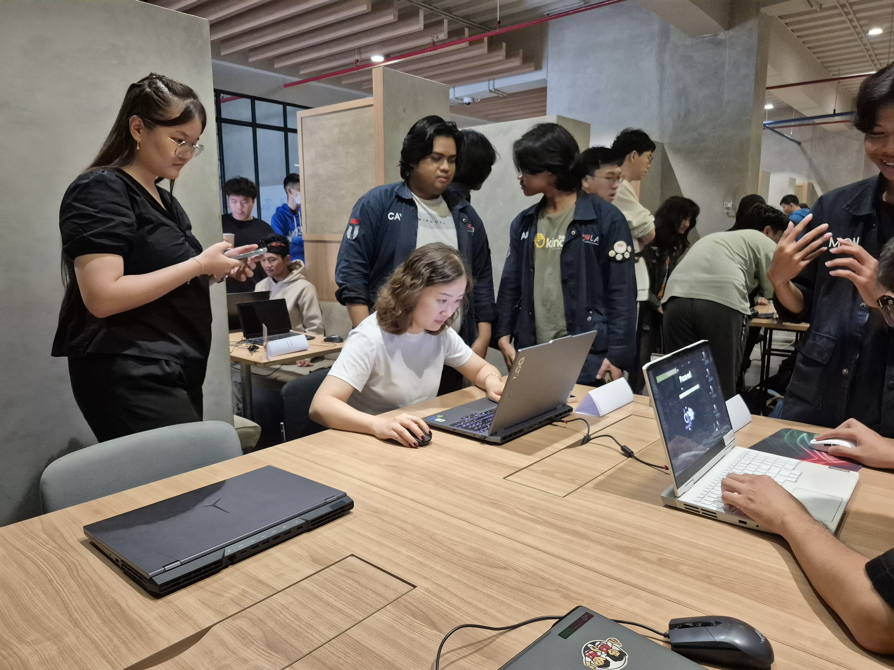

Tautan: Lihat Proyek di itch.io
.png)